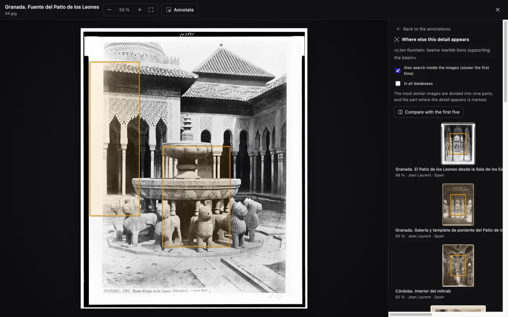
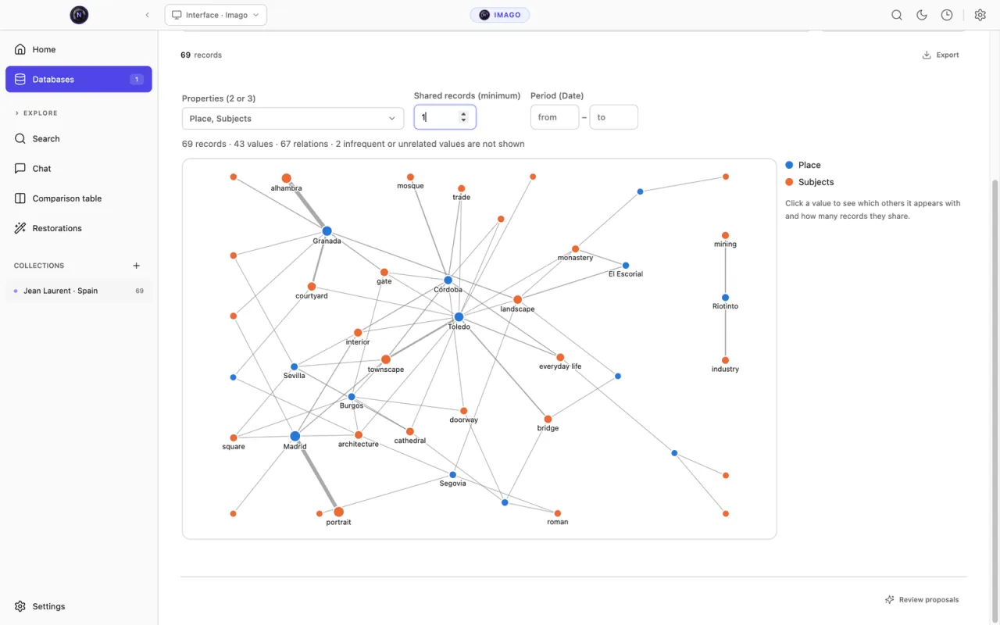

Nodus Imago
Explore images Discover history
Nodus Imago is a free, open-source desktop application for historians, art historians and archivists who work with photographs, engravings and other visual sources.
macOS · Windows · Linux · Free and open source
Part of the Nodus family · GitHub
Catalogue and describe
Every image keeps a catalogue record with the fields you choose. Bring in what you already have, and let an AI model propose descriptions, tags and transcriptions that you approve.
Build image databases with your own fields: text, dates, places, people, single and multiple tags.
Import from CSV, Tropy, IIIF manifests, Notion or Nodus. Images are matched to their records by file name; originals are never modified.
Dates stay as cataloguers write them, “c. 1860”, “[1930]”, “1950s”, and still work in filters, the timeline and statistics.
Describe, tag and transcribe with AI, one record or many at a time. Every result is a proposal until you approve it.

Search by words, likeness or detail
Search by exact words, by meaning or with another image. Mark a region of a photograph and find that detail inside every other image of the collection.
Text and semantic search over records, descriptions and transcriptions.
Search with an image to find the photographs that look most like it.
Search for a detail and see exactly where it appears in other images.
See the whole collection at once: the visual map places every image by likeness, coloured by place, subject or year.

Compare historical photographs
Follow a photograph through its prints, scans and crops, lay one over another to see what changed, and put a view next to the same place today.
Variants finds the same photograph in different records, in date order.
The comparison table shows up to six images side by side with shared zoom, or overlays two of them.
Then and now sets a historical view beside present-day photographs from Wikimedia Commons.
Restore without touching the original: restored, repaired or colourised versions are kept apart and marked as AI modified.


Analyse and link
Turn the catalogue into evidence: maps, a timeline, statistics and a network of who and what appears together, linked to the authorities historians already use.
Statistics: frequencies, cross-tabs with chi-square and Cramér’s V, co-occurrence and trends.
Maps and viewpoints: place records with the direction the camera faced and find photographs taken from the same spot.
A timeline and a network of places, people and subjects across the collection.
Link to Wikidata, Getty and Iconclass, and copy citations in Chicago, ISO 690 or APA.

Screenshots show photographs by Jean Laurent and his studio (1850s–1880s) from public collections. See the image credits.
Free to use. Yours to keep.
Nodus Imago is open source under the AGPL-3.0-only licence. Your images, catalogue and search index stay on your computer, and full backups can be scheduled and encrypted.
One family of tools for research.
Nodus Imago is one of the free, open-source apps made by Nodus Research.